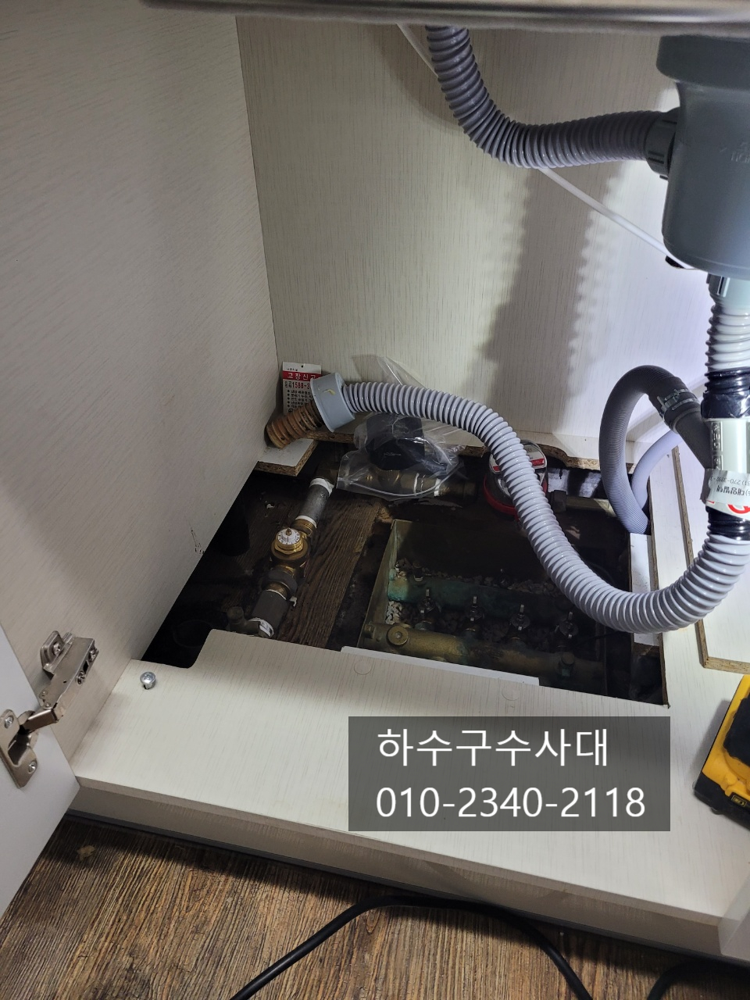
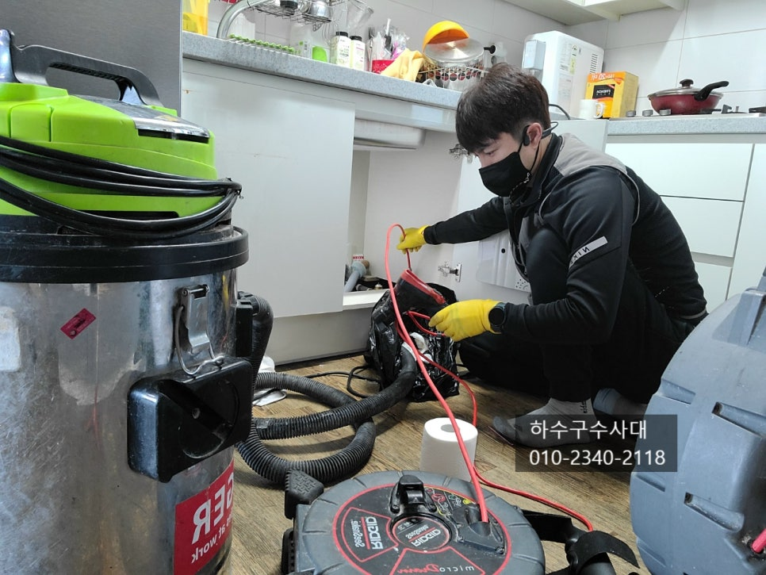
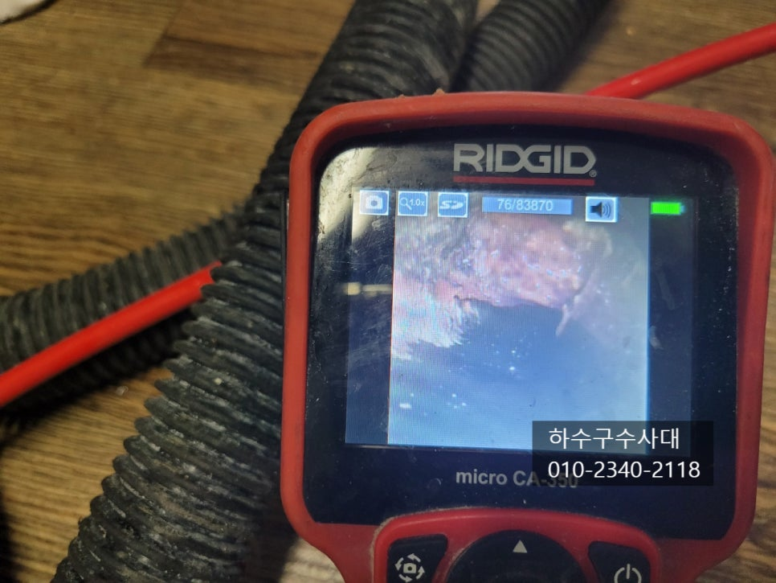
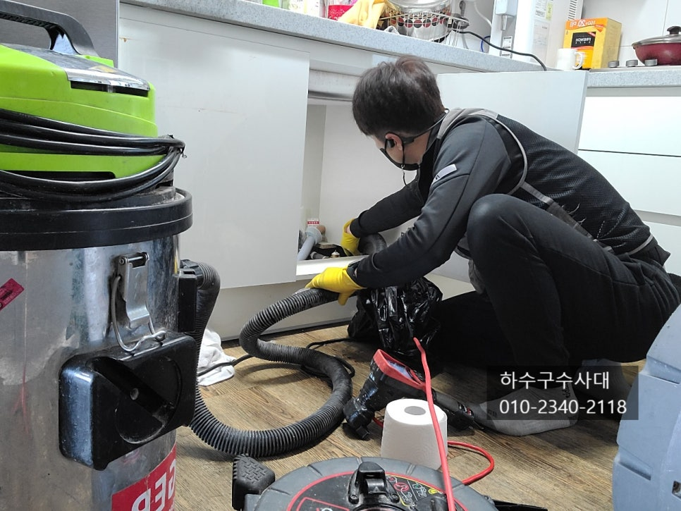
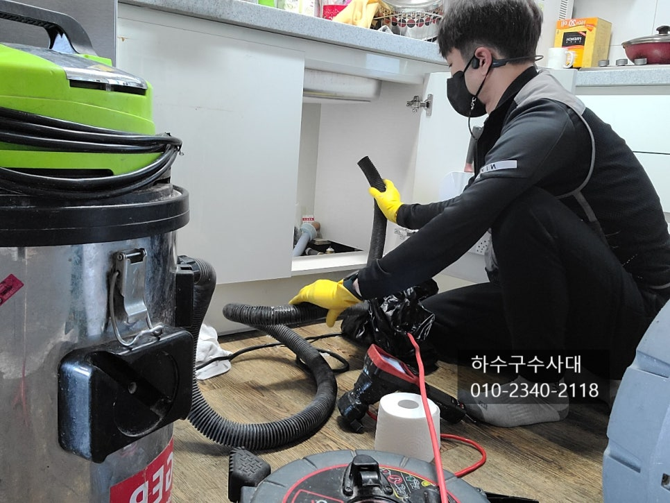
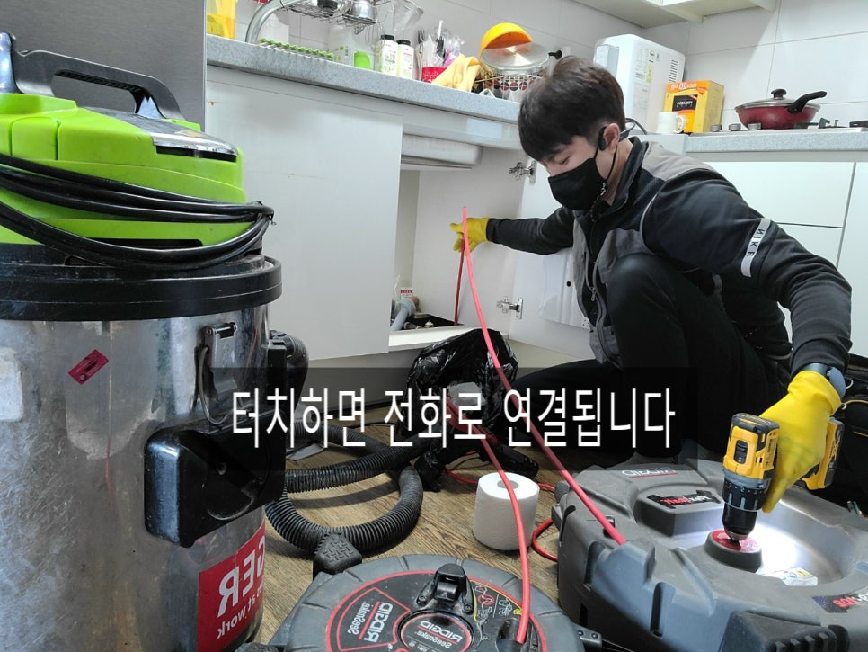

🏠 기흥구하수구막힘 기흥 하수구전문업체
수원 기흥 싱크대막힘 전문 시공 후기

📋 작업 개요
- 위치: 수원 기흥, 기흥, 수원
- 서비스 유형: 싱크대막힘, 하수구막힘, 배관막힘, 누수수리, 역류해결, 뚫는업체
- 작업 일시: 2022. 1. 4. 21:08
- 업체명: 하수구수사대 (010-5615-2118)
🔍 문제 상황
기흥구하수구막힘 기흥 하수구전문업체
안녕하세요
"하수구수사대"입니다.
일상생활중 하수구가 막히게 되면 우선적으로
클리너 제품을 사용하게 되거나 철물점에서
판매하는 스프링 제품으로 직접뚫으려고 대부분
시도를 하게 됩니다. 단순막힘의 경우 클리너나 철물점에서
판매하는 장비로도 충분히 해결이 되기도 하는데요
간혹 2~3시간을 뚫어보려 해도 뚫릴 기미가 보이지
않기도 한답니다. 또는 뚫려도 얼마가지않아
또 막히게 된다면 정확한 원인과 해결을 위해
전문가를 부르는것을 추천드립니다.
오늘 현장은 아파트싱크대 하수구가 막혀 연락을 받고 출동한
곳인데요 스프링으로 최근 6개월간 업체를 불러 2번이나 뚫으셨지만
그때뿐이고 많은 양의 물을 쓰면 하수구로 역류되어 음식물로 인해
장판이 지져분해져 있는것을 확인할수가 있었어요.
이러한 경우 꼭 필요한 장비가 내시경카메라인데요
내시경으로 배관상태를 확인후 원인을 파악하고

🔎 원인 분석
💡 전문가 진단: 하수구수사대010-2340-2118
이에 맞는 작업이 이루어져야 두번다시 역류하는
증상을 없앨수 있습니다.
내시경카메라로 하수구를 확인 해보니 기름슬러지가
배관에 붙어 구멍이 좁아져 있는것을 볼수 있는데요
이처럼 구멍이 좁다보니 많은양의 물을 소화하지 못하고
장판으로 역류할수 밖에 없답니다.
스프링장비로는 구멍으로만 관통을 하기 때문에
배관 위쪽과 옆면에 있는 기름슬러지를 완벽하게
제거하지 못하니 적합하지 않은 장비입니다.
싱크대하수구에 최적화 되어있는 장비를
소개해 드리자면 리지드사의 플렉스샤프트가 있는데요
플렉스샤프트는 와이어 앞에 체인오거가 장착되어
배관에서 회전을하며 기름슬러지를 갈아내고 부숴버리기
때문에 완벽하게 기름슬러지를 제거할수 있습니다.
하수구수사대
010-2340-2118
내시경카메라는 필수인데요 간혹 기름을 제거하고 나면
싱크대호스나 젓가락등 이물질을 발견하기도 합니다.

🔧 작업 과정
이러한 것이 있는지 눈으로 확인하지 못하고 장비를
작동한다면 장비도 고장나고 배관이 깨지거나 금이
갈수 있기때문에 조심해야합니다.
이물질중에는 싱크대호스가 가장 많다고 할수 있는데요
몇몇 설비기사님들이 싱크대호스를 하수구 깊숙히
넣어야 막히지 않는다고 깊게 넣는데 당장은 모르겠지만
시간이 지나면 싱크대호스가 경화되어 딱딱해지면
호스를 빼는 과정에서 부러져 하수구에 남아 있게 되는 것입니다.
하수구에 기름이 생기는 원인은 이물질에 의한
물고임이나 구조상 배관 구배가 좋지않아 물이 고여있어
기름성분이 고여있는 구간에 머무르면서 배관에 붙게 됩니다.
이렇게 반복적으로 붙게되면 딱딱하게 굳게 되는데요
딱딱하게 굳기전에 펑크린이나 뚜러펑 같은 세정제로
제거해 주는것이 좋습니다.
설거지를 할때 물을 충분히 흘려보내고
한달에 한번씩 펑크린 또는 뚜러펑을 부어주면
막힘 증상을 예방할수 있답니다.
하지만 이미 굳어있는 기름덩어리는 약품으로 녹거나
제게되기는 힘들다고 봐야합니다.
우선적으로 배관구조와 배관상태를 모르기 때문에
어떻게 관리를 해야할지 고민도 하실텐데요
집에서 우선적으로 할 수있는 방법은 물을 많이
받아서 한번에 내려보는건데요 물이 다 내려갈때쯤
꼬르륵~ 하는 하수구가 텅빈 소리가 난다면
배관상태가 좋다고 보시면 됩니다^^
위 영상처럼 물을 받아서 다내려 갈때쯤 소리를
비교해 보시면 좋을거 같아요.
하수구물이 역류한다면 당장은 우리집이 문제이겠지만


✅ 작업 완료
더 심해지면 밑에집으로 누수가 될수도 있기때문에
싱크대하수구가 역류한다면 제대로 해결하시길 추천드립니다.
저희 "하수구수사대"는 서울,경기,인천 전지역에서
활동을 하고있으며 하수구전문업체로
전문장비와 다년간의 경험으로 완벽하게
해결해 드리니 하수구막힘으로 고민중이시라면
언제든지 연락주세요^^
경기도 수원시 영통구 봉영로 1612 7층 710-A19호




⚠️ 베란다 누수 및 방수 관리 방법
- ✅ 비가 많이 올 때 창틀 주변이나 아래층 천장에 얼룩이 생기는지 정기적으로 확인해 보세요.
- ✅ 우수관 주변 실리콘 마감이 들뜨거나 깨진 틈새가 있는지 손상 여부를 수시로 체크하세요.
- ✅ 베란다 바닥 타일의 줄눈(메지)이 소실되면 그 틈으로 물이 침투하여 누수가 유발됩니다.
- ✅ 누수 의심 증상 발견 시 방치하면 아래층 손실이 커지므로 즉시 전문가의 진단을 받으십시오.
💡 핵심 정리
- 확실한 장비 작업(내시경 점검 및 샤프트 스케일링)으로 원인을 뿌리 뽑습니다.
- 작업 후 1년 이내에 동일한 부위 재발 시 100% 무상 A/S 서비스를 보장합니다.
- 서울 · 경기 · 인천 전 지역에 24시간 언제든 긴급 출동할 수 있도록 항시 대기 중입니다.
❓ 자주 묻는 질문 (FAQ)
🚨 수원 기흥 싱크대막힘 문제로 고민이신가요?
정확한 원인 진단과 확실한 시공으로 재발 없는 해결을 약속드립니다.
24시간 긴급 출동 | 서울 · 경기 · 인천 전지역 | 1년 내 재발 시 무상 A/S